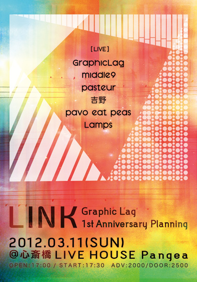

<?php include('header.php'); ?>

<!-- head (ページ個別適用) -->

	<title>SHOWS | Graphic Lag Website</title>

	<!-- ▼META Setting -->
	<meta name="keywords" content="Graphi Lag,Band,Osaka,Instrumental,グラフィック ラグ,バンド,大阪,インスト">
	<meta name="description" content="ライブ・イベント出演情報 / Show Schedule">

	<!-- ▼LINK Setting -->
	<link rel="prev" href="news.html" title="前のページ">
	<link rel="next" href="music.html" title="次のページ">

	<style>
	<!-- 

	 -->
	</style>

<!-- /head -->

<?php include('menu.php'); ?>

<article id="page_shows" class="clearfix">
	<header><h1>SHOWS</h1><!-- スペース厳禁 --><div>
		<p>ライブ・イベント出演情報 / チケットオンライン予約</p>
		<p lang="en">Latest Live Show Schedule &amp; Online Ticket Reserve</p>
		</div>
	</header>

	<div class="inner">
		<section>
		<ul>
			<!-- 
			<h2 lang="en">December<span lang="ja">2011年12月</span></h2>
			<li class="item">
				<h3>2011.12.18 <span class="color_red">SUN</span> at <a href="http://www.mother-popcorn.com/" target="_blank">Osaka Mother Popcorn</a></h3>
				<p class="show_title">『クリスマスの約束 ～鍋とライブと達郎と～』</p>
				<p class="sub">OPEN 13：30 START 14:00 / ￥1,000- <span class="color_red">(1Drink付き)</span></p>
				<dl>
					<dt>WITH</dt>
					<dd>
					<ul>
						<li>CHiCHi</li>
						<li>ドレス</li>
						<li>Fall Off</li>
						<li>Lamps</li>
						<li>しゃこ</li>
						<li>esse</li>
						<li>...and more</li>
					</ul>
					</dd>
					<dt>INFO</dt>
					<dd>
						<p>※終演後、会場内でご来場の方も参加可能な打ち上げがあります。</p>
						<p>TICKET RESERVE : お名前、日付、予約枚数を記入の上、<a href="mailto:graphiclag+ticket@gmail.com">メール</a>して下さい。</p>
						<p>MORE INFO : 06-6535-0002 <span class="sub">(Mother Popcorn)</span></p>
					</dd>
				</dl>
			</li> 
			<h2 lang="en">January<span lang="ja">2012年01月</span></h2>
			<li class="item">
				<h3>2012.01.06 (FRI) at <a href="http://livepangea.com/" target="_blank">Osaka Pangea</a></h3>
				<p class="show_title">&ldquo;QUEEN FOR A DAY vol.2&rdquo;</p>
				<p class="sub">OPEN 18：30 START 19:00 / ADV ￥1,500- DOOR ￥2,000- (+1Drink)</p>
				<dl>
					<dt>WITH</dt>
					<dd>
					<ul>
						<li>The MONGOLOID</li>
						<li>吉野</li>
						<li>VINCENT trip film</li>
					</ul>
					</dd>
					<dt>INFO</dt>
					<dd>
						<p>TICKET RESERVE : お名前、日付、予約枚数を記入の上、<a href="mailto:graphiclag+ticket@gmail.com">メール</a>して下さい。</p>
						<p>MORE INFO : 06-4708-0061 <span class="sub">(Pangea)</span></p>
					</dd>
				</dl>
			</li>
			-->
			<h2 lang="en">March<span lang="ja">2012年03月</span></h2>
			<li id="live20120311" class="item">
				<h3>2012.03.11 (<span class="color_red">SUN</span>) at <a href="http://livepangea.com/" target="_blank">Osaka Pangea</a></h3>
				<p class="show_title"><strong class="color_red">Graphic Lag presents &ldquo;LINK&rdquo;</strong></p>
				<p class="sub">OPEN 17：00 START 17:30 / ADV ￥2,000- DOOR ￥2,500- (+1Drink)</p>
				<dl>
					<dt>WITH</dt>
					<dd>
					<ul class="show_band">
						<li>middle 9 <a href="http://middle9.net/" target="_blank">web</a><a href="http://www.myspace.com/middle9jp" target="_blank">myspace</a></li>
						<li>pasteur (from Kyoto) <a href="http://pasteurexperiment.tumblr.com/" target="_blank">web</a><a href="http://www.myspace.com/pasteurjap" target="_blank">myspace</a></li>
						<li>吉野 <a href="http://07.xmbs.jp/yoshino2011/" target="_blank">web</a><a href="http://www.myspace.com/1004925487" target="_blank">myspace</a></li>
						<li>pavo eat peas <a href="http://pavoeatpeas.com/" target="_blank">web</a><a href="http://www.myspace.com/1004916889" target="_blank">myspace</a></li>
						<li>Lamps</li>
					</ul>
					</dd>
					<dt>INFO</dt>
					<dd>
						<p>Graphic Lagのライブ活動開始一周年として、初の主催企画イベントが、大阪心斎橋のPangeaにて開催。
						出演バンドは全てインストゥルメンタル・バンド！それも、Graphic Lagメンバー心からの一推しバンド！という、こだわりの素晴らしいラインナップが実現しました。
						このインスト祭り、必見です。</p>
						<h4>SPECIAL PRESENT 1</h4>
						<p>2月中に、当サイト<a href="music.html">MUSIC</a>ページよりダウンロードできるGraphic Lag旧デモ音源をダウンロードした方の中から、
						抽選で5名様を &ldquo;LINK&rdquo; にご招待。一度ダウンロードされた方も期間内に再度行っていただければ対象となります。是非よろしくお願いします。<br>
						※当選の発表は、ご招待メールの送信をもって代えさせていただきます。<br>
						※メールアドレスを変更された場合、ご招待メールが受信できませんのでご注意下さい。<br>
						※会場への交通費、及び当日のドリンク代金はご負担いただきます。<br>
						※既にチケット予約をされていた場合も、当選の際は予約分のキャンセルはお伺いいたしますので、ご来場予定の方は是非お早めにご予約頂くこともお勧めいたします。</p>
						<h4>SPECIAL PRESENT 2</h4>
						<p>当日、先着で完全限定の非売品新デモ音源をプレゼント。一定数が無くなり次第配布終了しますので、当日は是非お早目にご来場下さい。</p>
						<h4>TICKET RESERVE</h4>
						<p>受付中。お名前、日付、予約枚数を記入の上、<a href="mailto:graphiclag+ticket@gmail.com">メール</a>して下さい。</p>
					</dd>
					
				</dl>
			</li>
		</ul>
		</section>

		<!-- 【★実装予定】
		<section class="grey_box">
		<h3>Past Live Archive</h3>
		</section>
		-->

	<!-- /.inner -->
	</div>

	<aside>

		<!-- 【★実装予定】
		<h2 lang="en">Ticket Reserve<span lang="ja">チケット予約</span></h2>
		<form id="ticket" class="grey_box">		
			<div>
			<select>
			 <option>Day</option>
			 <option>11/03</option>
			 <option>11/26</option>
			</select> <label>at Kyoto MOJO</label>
			</div>
			<div>
			<label>￥2,000- ×</label> <select>
			 <option>1</option>
			 <option>2</option>
			 <option>3</option>
			 <option>4</option>
			 <option>5</option>
			</select>
			</div>
			<input type="text" value="Name">
			<input type="text" value="E-Mail">
			<input type="text" value="E-Mail (確認用)">
			<textarea>Message (任意)</textarea>
			<input type="submit" value="Send">
			<input type="reset" value="Reset">
		</form>
		-->

	</aside>

</article>

<?php include('footer.php'); ?>
